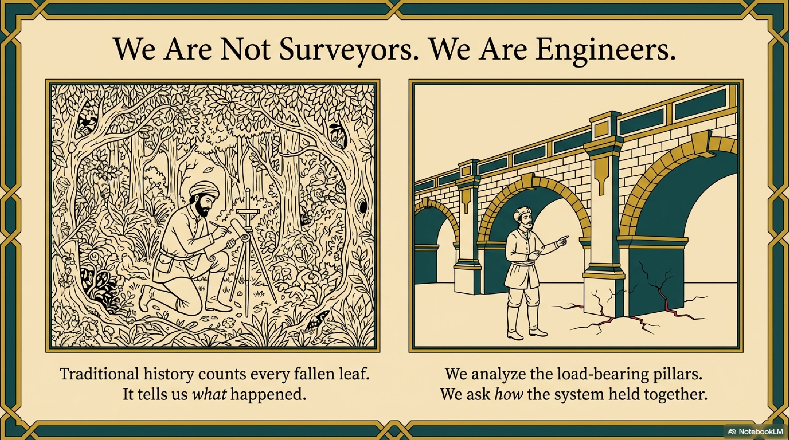
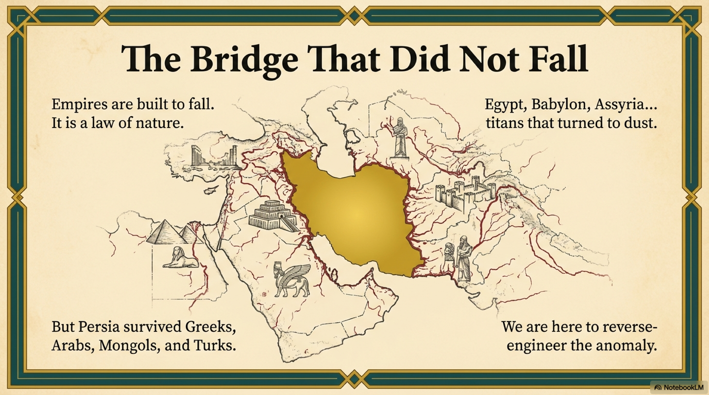
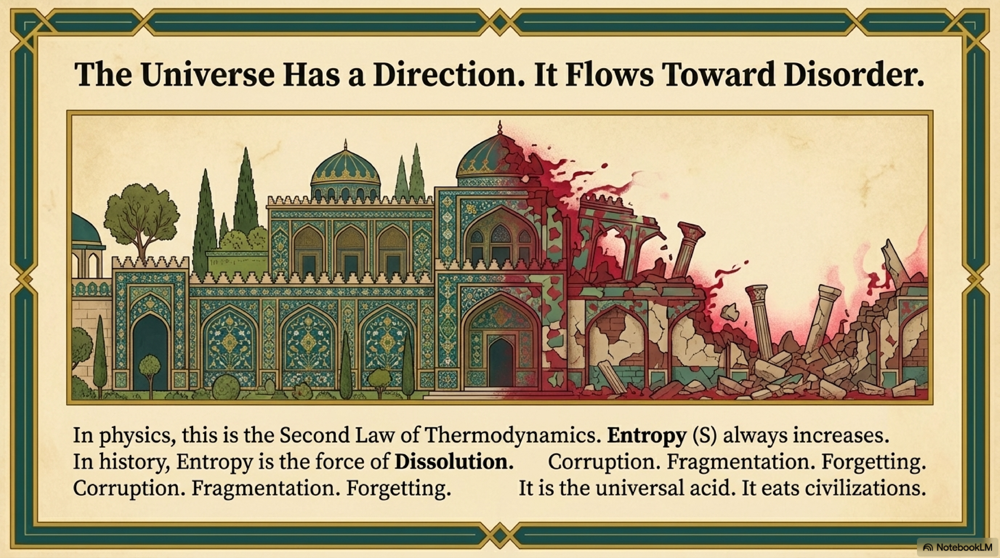
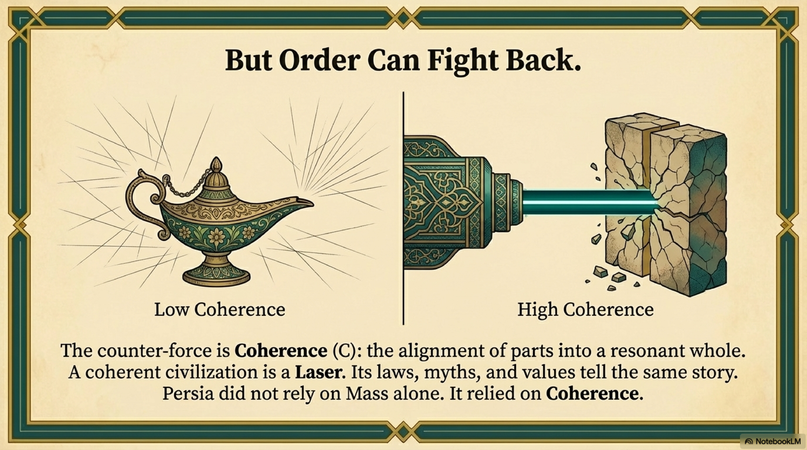
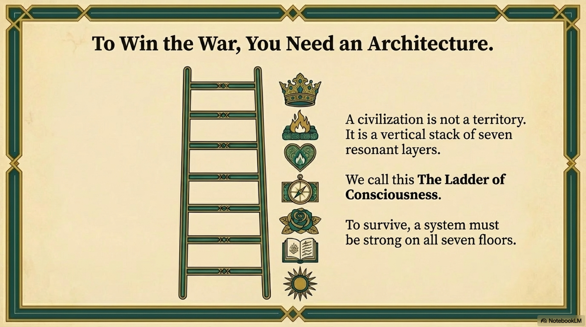

If you ask a modern person what the Zoroastrian motto—Good Thoughts, Good Words, Good Deeds—means, they will likely shrug. It sounds like a platitude. It sounds like the "Golden Rule," a nice, soft piece of moral advice suitable for children.
But to the ancient Persian mind, this was not advice. It was physics.
The word "Good" (Vohu) in Avestan did not just mean "morally praiseworthy." It meant "beneficial," "constructive," or "aligned." It implied effectiveness.
Zarathustra was not teaching his followers how to be nice. He was teaching them how to be Low-Entropy Agents.
In our structural analysis, a system maintains coherence by minimizing internal friction. In a human society, the primary source of friction is not physical; it is informational.
The primary source of entropy in a civilization is the Lie.

Herodotus, the Greek historian, famously wrote that Persian youths were taught only three things: "To ride a horse, to draw a bow, and to tell the truth."
Why the obsession with truth?
In the Achaemenid inscriptions, the Great King Darius does not call his enemies "sinners" or "monsters." He calls them Drauga—The Lie. The rebel kings are not political opponents; they are "Liars."
To the Persian mind, a lie is an act of ontological vandalism.
Consider the thermodynamics of a lie:
A lie introduces a split between the Map and the Territory. It injects noise into the communication channel. If I tell you a lie, I force you to construct a model of the world that does not match the physical reality. When you act on that false map, your action will fail. You will encounter friction. You will generate entropy.
A society where lying is common is a High-Entropy System. Every transaction requires high energy to verify. Trust is low. Friction is high. Such a society cannot scale. It cannot build complex institutions, because the mortar holding the bricks together—the information flow—is crumbling.
Zarathustra realized that for a civilization to scale, it needed to minimize the Informational Entropy of its citizens. It needed a protocol to ensure that the signal fidelity between Mind, Speech, and Reality was perfect.

The motto Humata, Hukhta, Huvarshta is that protocol. It is a three-stage filter for processing reality.
The first stage is internal. Before you act, your mind must be aligned with Asha (Truth). This is Level 4, The Map. It is Cognitive Coherence. It is the rejection of delusion, bias, and chaotic impulse. A "Good Thought" is a thought that accurately reflects reality. It is a low-entropy map.
The second stage is transmission. The thought must be converted into a symbol or Word without distortion. This is Level 5, The Garden. In ancient Iran, the spoken word was binding. The god Mithra was the god of the Covenant, the Contract, and the Oath. To break one's word was to break the structure of the universe. "Good Speech" creates a Resonant Field where people can trust that they are sharing the same reality. It is the bedrock of commerce and law.
The final stage is instantiation. The coherent thought, transmitted by coherent speech, must manifest as coherent action in the physical world. This is Level 1, The Roots. Zoroastrianism is unique among ancient religions in that it is aggressively anti-monastic. It does not tell you to retreat from the world. It tells you to fix it. "Good Deeds" are thermodynamic interventions. Planting a tree is a Good Deed because it converts solar chaos into biological order. Building a canal is a Good Deed because it organizes the flow of water. The goal of Huvarshta is to imprint the order of the mind onto the chaos of matter.

While the Kings used this protocol to build laws and treaties, the Hidden Stream—the women and the families—applied it to The Rhythm, Level 2.
In the domestic sphere, Asha (Truth) manifested as Cleanliness.
The Persian obsession with purity was not just ritualistic; it was an entropy-reduction strategy for the home. It meant keeping the water pure. Keeping the fire fed. Keeping the language spoken to children clear and honest.
The mothers understood that if you allow Druj—which is disorder, dirt, and lies—into the home, the family unit destabilizes. They taught their children that a lie was "dirty"—a visceral, biological metaphor that linked moral ethics directly to physical hygiene.
This created a civilization where Coherence was not just a law imposed by the state, but a habit ingrained in the body.

By installing this protocol into the cultural software of the Iranian plateau, Zarathustra created the necessary conditions for the first World Empire.
You cannot run an empire stretching from India to Greece if you have to check every governor's report for lies. You cannot have a global economy if contracts are meaningless.
The Persian emphasis on Truth was a scalability solution.
It created a civilization with a remarkably low Coefficient of Friction. Because the baseline expectation was Coherence (Truth), the system could run with less force (F) and less waste (S).
This was the "Crystalline" nature of the sword. The internal lattice of the society was aligned. The millions of individual minds were running the same entropy-reduction algorithm.
But a philosophy, no matter how potent, is just a dream until it has a body. The algorithm needed hardware. It needed a King who understood how to build a state that could hold the Truth.
Enter Cyrus.